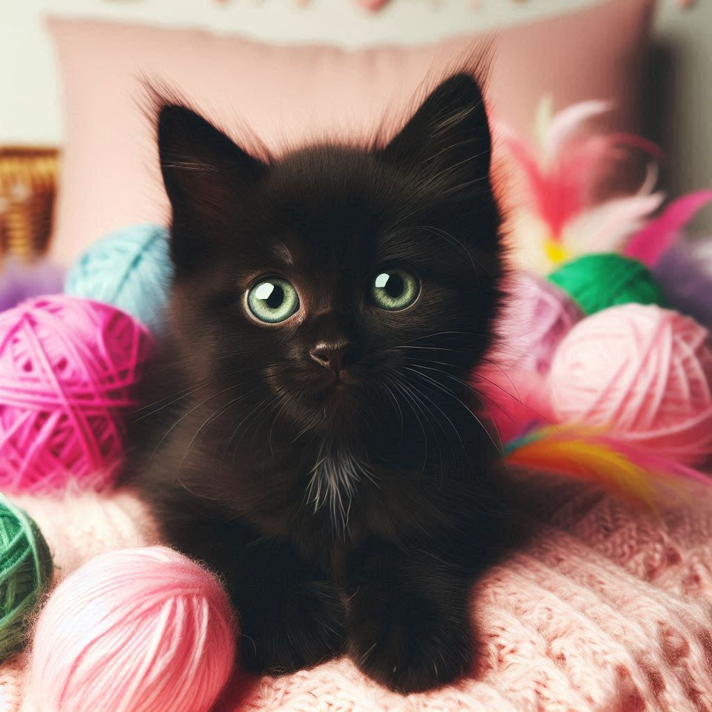
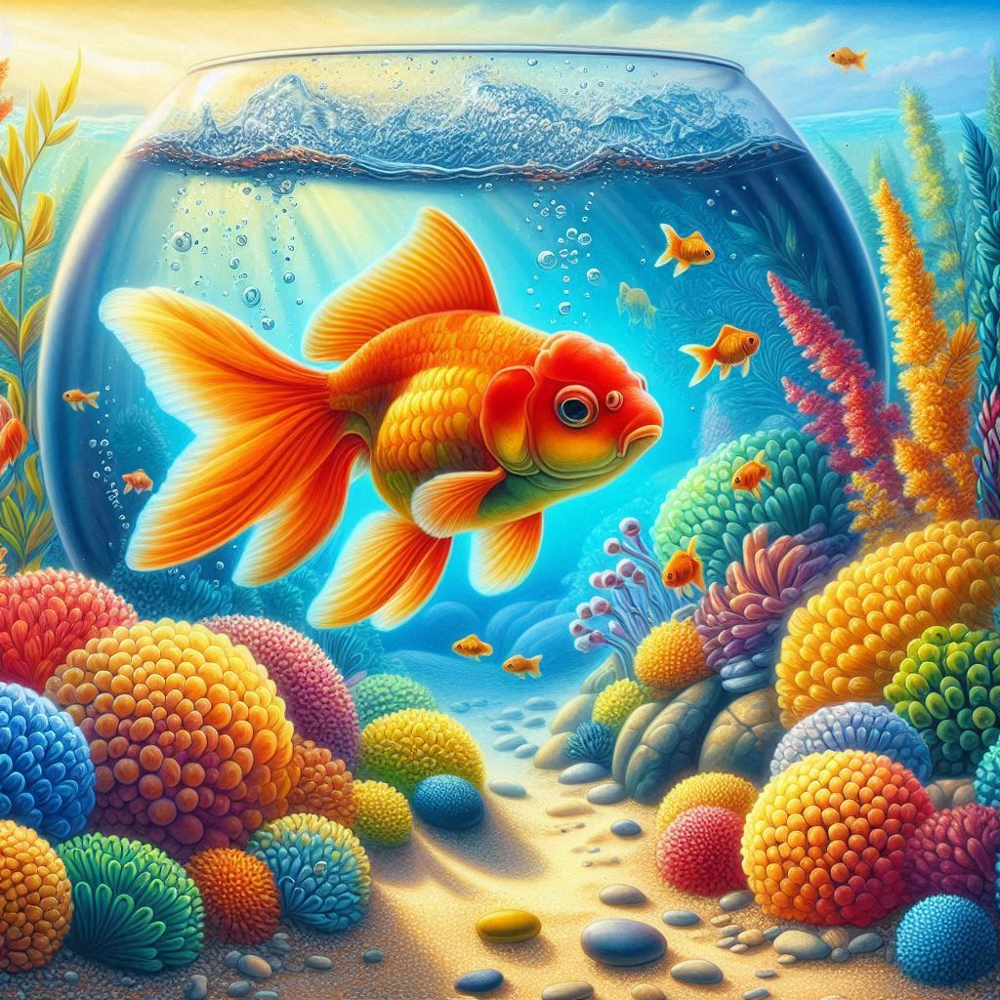

ANIMAIS FOFOS PARA ALEGRAR SEU DIA

Gatinho - Um simples ronronar de um gato fofo é capaz de transformar qualquer dia cinzento em um momento de pura alegria.
Cachorrinho - Um cachorrinho fofo, com seu olhar carinhoso e rabinho abanando, pode iluminar até o dia mais difícil com alegria
e amor incondicional.

Peixinho - Um peixinho fofo, nadando graciosamente no aquário, traz uma calma silenciosa que pode transformar qualquer dia agitado
em um momento de tranquilidade.
Qual o seu animalzinho favorito?!